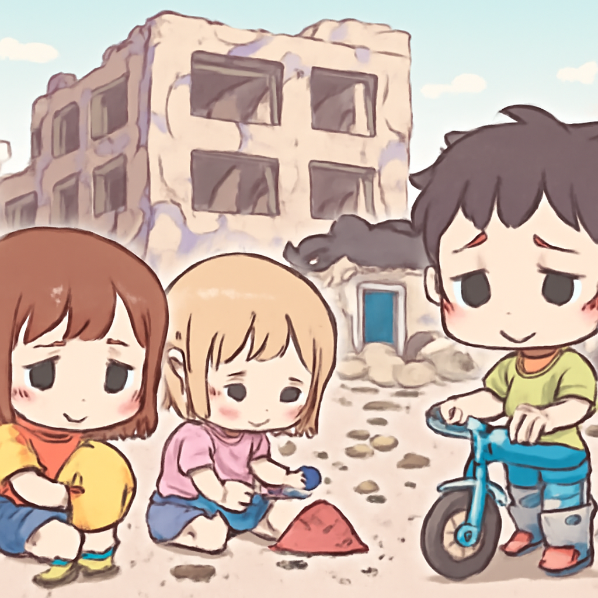

其一 · 中國北京 · 特朗普與習近平舉行高峰會談
特朗普到訪北京，聚焦貿易與台灣議題。
美國總統特朗普近日抵達中國北京，與習近平進行高層會談。他希望能促進中國市場的開放，而北京則對台灣問題表達強烈關注。這場會議不僅關乎兩國經濟，更可能影響全球局勢，讓人不禁想知道會不會出現「交易」的火花。
🔗 原始新聞 ↗
2026-05-14 · 以古觀今，以笑抗愁
特朗普到訪北京，聚焦貿易與台灣議題。
美國總統特朗普近日抵達中國北京，與習近平進行高層會談。他希望能促進中國市場的開放，而北京則對台灣問題表達強烈關注。這場會議不僅關乎兩國經濟，更可能影響全球局勢，讓人不禁想知道會不會出現「交易」的火花。
🔗 原始新聞 ↗
烏克蘭面臨俄羅斯無人機攻擊，再度造成平民死傷。
在烏克蘭，俄羅斯的無人機攻擊在停火結束後復甦，造成六人死亡，平民的生活再次陷入恐懼。烏克蘭總統澤連斯基警告，接下來可能還有更多攻擊，讓人不禁想問：這場戰爭到底要持續到何時？
🔗 原始新聞 ↗
以色列在黎巴嫩南部進行空襲，死者中包括兒童。

最近，在黎巴嫩南部發生的以色列空襲，已造成22人死亡，其中包括八名兒童。這場衝突的激烈程度令人擔憂，恐怕會進一步加劇地區緊張局勢，讓人不禁思考：和平究竟何時才能到來？
🔗 原始新聞 ↗
英國政客法拉奇因500萬英鎊捐款遭調查。
英國政客法拉奇因一筆500萬英鎊的捐款被議會監察機構調查，這在英國政壇引發了不小的風波。這是否意味著政客們的金錢遊戲要受到更嚴厲的監控呢？希望這不會成為新的政治八卦！
🔗 原始新聞 ↗
印尼科技大亨因貪污指控，面臨長期監禁風險。
印尼知名科技大亨納迪姆·馬卡里姆因涉嫌貪污而面臨18年監禁的風險，這引起了外界對當地政府反貪腐運動的質疑。這場官司是否會成為科技界的警惕信號？希望他能翻轉這場危機！
🔗 原始新聞 ↗